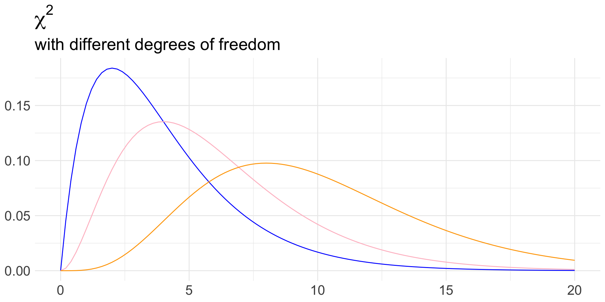

Chi-squared test
4/16/25
Housekeeping
- Project proposals due tonight!
Chi-squared test for independence
A new test
Suppose we have two categorical variables:
Variable 1 has \(I\) levels
Variable 2 has \(J\) levels
We are interested in learning if the two variables are associated or not!
\(H_{0}\): the two variables are independent (put into context)
\(H_{A}\): the two variables are associated (put into context)
Note! We are not interested in a mean/proportion, so CLT will not be helpful here!
We will build this hypothesis test backwards.
Coffee-death data
Recall our data from earlier in the semester:

Source: https://www.ncbi.nlm.nih.gov/pmc/articles/PMC5788283/
| Did not die | Died | Total | |
|---|---|---|---|
| No coffee | 5438 | 1039 | 6477 |
| Occasional coffee | 29712 | 4440 | 34152 |
| Regular coffee | 24934 | 3601 | 28535 |
| Total | 60084 | 9080 | 69164 |
\(H_{0}:\) coffee consumption and mortality are independent
\(H_{A}\): coffee consumption and mortality are associated
Note, \(I = 3\) rows and \(J = 2\) columns
Recall probability
How might we test these hypotheses?
Recall from Probability lecture: if events \(A\) and \(B\) are independent, then \(P(A \cap B) = P(A) P(B)\).
- We will use this idea to obtain “expected counts” in each cell under a world where we assume the two variables are independent.
What is null world?
| Did not die | Died | Total | |
|---|---|---|---|
| No coffee | 6477 | ||
| Occasional coffee | 34152 | ||
| Regular coffee | 28535 | ||
| Total | 60084 | 9080 | 69164 |
Assuming independence:
\[ \begin{align*} \text{P}(\text{no coffee} \cap \text{die not die}) &= \text{P}(\text{no coffee}) \times \text{P}(\text{die not die}) \\ &= \left( \frac{6477}{69164} \right)\times \left( \frac{60084}{69164} \right) \end{align*} \]
So the expected count of this cell is the the sample size times this probability:
\[ \text{expected count} = 69164 \times \left( \frac{6477}{69164} \right)\times \left( \frac{60084}{69164} \right) = \frac{6477 \times 60084}{69164} \]
Table of expected counts
| Did not die | Died | Total | |
|---|---|---|---|
| No coffee | \(E_{11}= \frac{6477 \times 60084}{69164} = 5626.69\) | 6477 | |
| Occasional coffee | 34152 | ||
| Regular coffee | 28535 | ||
| Total | 60084 | 9080 | 69164 |
In general, the expected counts in cell of row \(i\) and column \(j\) (denoted \(E_{ij}\)) is:
\[ E_{ij} = \frac{(\text{row } i \text{ total}) \times (\text{column } j \text{ total})}{\text{Overall total}} \]
Fill out rest of table!
Table of expected counts
| Did not die | Died | Total | |
|---|---|---|---|
| No coffee | \(E_{11} = \frac{6477 \times 60084}{69164} = 5626.7\) | \(E_{12} = 850.3\) | 6477 |
| Occasional coffee | \(E_{21} =2.96685\times 10^{4}\) | \(E_{22} = 4483.5\) | 34152 |
| Regular coffee | \(E_{31} = 2.47889\times 10^{4}\) | \(E_{32} = 3746.1\) | 28535 |
| Total | 60084 | 9080 | 69164 |
Towards a test statistic
Remember, a test statistic is a quantity that compares our data to null world.
So let’s compare our observed counts to what we would expect under \(H_{0}\).
Let \(O_{ij}\) represent the observed count in row \(i\) and column \(j\)
We might consider the following as a test statistic: \[\sum_{i,j} (O_{ij} - E_{ij}) \qquad \text{ (summing over all } i,j)\]
Why might we not like this?
Towards a test statistic (cont.)
Let’s try to fix this issue using the following: \[\sum_{i,j} (O_{ij} - E_{ij})^2\]
This is better, but not perfect because the magnitude of the quantity may be overly influenced by:
Highly-represented cells
The number of levels \(I\) and \(J\)
Our test statistic
We will consider the ratio of how far the observed counts are from the expected counts, as compared to the expected count
\[ \chi^2 = \sum_{i,j} \frac{(O_{ij} - E_{ij})^2}{E_{ij}} \]
This is called the Chi-squared test statistic
Let’s calculate the value of \(\chi^2\) for our data!
\[ \begin{align*} \chi^2 &= \frac{(5438 - 5626.7 )^2}{5626.7} + \frac{(1039 - 850.3 )^2}{850.3} + \ldots + \frac{(3601 - 3746.1)^2}{3746.1} \\ &= 6.33 + 41.88 + 0.06 + 0.42 + 0.85 + 5.62 \\ &= 55.16 \end{align*} \]
Understanding the test statistic
Discuss with someone next to you:
What are the bounds of \(\chi^2\)?
Would higher or lower values of \(\chi^2\) provide convincing evidence against \(H_{0}\)? Why?
The sampling distribution of this statistic is clearly not Normal. Why?
If you take STAT 311, you will learn that the null distribution of the \(\chi^2\) test statistic is the \(\chi_{df}^2\) distribution (sorry for terminology)
Chi-squared distribution
Null distribution and p-value
When \(H_{0}\) true, the test statistic \(\chi^2 \sim \chi_{df}^2\) where \(df = (I- 1)\times(J-1)\)
That is, \(df = (\text{number of rows} - 1)\times(\text{number of columns} - 1)\)
What are the degrees of freedom in our data?
- \(df = (3-1) \times (2-1) = 2\)
Conditions for the chi-squared test
- Even though this isn’t a CLT-based result, we are still using a mathematical model (i.e. the \(\chi^2\) distribution)
- As a result, we have some conditions that must be met in order to use this test:
- Independent observations (i.e. random sample)
- Large samples: \(E_{ij} \geq 5\) for each \((i,j)\) cell
- In our data, the study was a random sample and we definitely had \(E_{ij} \geq 5\), so we could indeed perform the Chi-squared test!
Example 2: exploding termites!
Data come from this study!
In some termite species, worker termites assume a large share of defense
This often involves self-sacrifice (i.e. bursting)
In the species Neocapritermes taracua, workers fall into one of two categories based on coloring: “blue workers” and “white workers”
The blue coloring comes from a pair of crystal-like structures in the body
In defensive mode, both types of workers will burst and emit a toxic fluid
Blue termites are thought to be more toxic than white termites
Experiment
Some scientists wanted to learn about the toxicity of the termites and how they relate to the crystals.
Designed an experiment where another species of termite (Labiotermes labralis) was exposed to a drop of the bursting liquid obtained from one of four sources
- Observed survival status after 60 minutes
Four types of burst liquid (treatment):
Blue workers
White workers
Blue workers with crystals removed
White workers with crystals added
Survival of (Labiotermes labralis) (response):
Unharmed
Paralyzed
Dead
Data (cont.)
We have the following data:
| Unharmed | Paralyzed | Dead | Total | |
|---|---|---|---|---|
| Blue workers | 3 | 11 | 26 | 40 |
| White workers | 31 | 4 | 5 | 40 |
| Blue workers (crystals removed) | 26 | 8 | 7 | 41 |
| White workers (crystals added) | 17 | 5 | 18 | 40 |
| Total | 77 | 28 | 56 | 161 |
Let’s perform a \(\chi^2\) test at the 0.05-level to see if bursting liquid source is associated with toxicity!
Conduct test
Define hypotheses
Check conditions for inference.
\(H_{0}\): the bursting liquid source and toxicity of the liquid are independent
\(H_{A}\): the bursting liquid source and toxicity of the liquid are associated
Conditions
Table of expected counts:
| Unharmed | Paralyzed | Dead | Total | |
|---|---|---|---|---|
| Blue | 19.13 | 6.96 | 13.91 | 40 |
| White | 19.13 | 6.96 | 13.91 | 40 |
| Blue (w/o crystals) | 19.61 | 7.13 | 14.26 | 41 |
| White (w/ crystals) | 19.13 | 6.96 | 13.91 | 40 |
| Total | 77 | 28 | 56 | 161 |
Since all expected counts \(\geq 5\) and it’s reasonable to believe independence across termite survival, conditions are met!
Finish test
Obtain (or set-up the calculation) test-statistic, the distribution of the test statistic, and write-code to obtain p-value.
Value of test statistic:
\[ \begin{align*} \chi^2 &= \frac{(3-19.13)^2}{19.13} + \frac{(11-6.96)^2}{6.96} + \frac{(26-13.91)^2}{13.91} + \ldots + \frac{(18-13.91)^2}{13.91} \\ &= 48.66 \end{align*} \]
Distribution of test statistic: \(\chi^2_{6}\)
p-value: \(P(\chi^2 \geq 48.66)\)
Decision and conclusion!